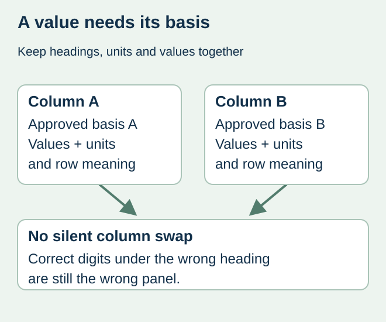
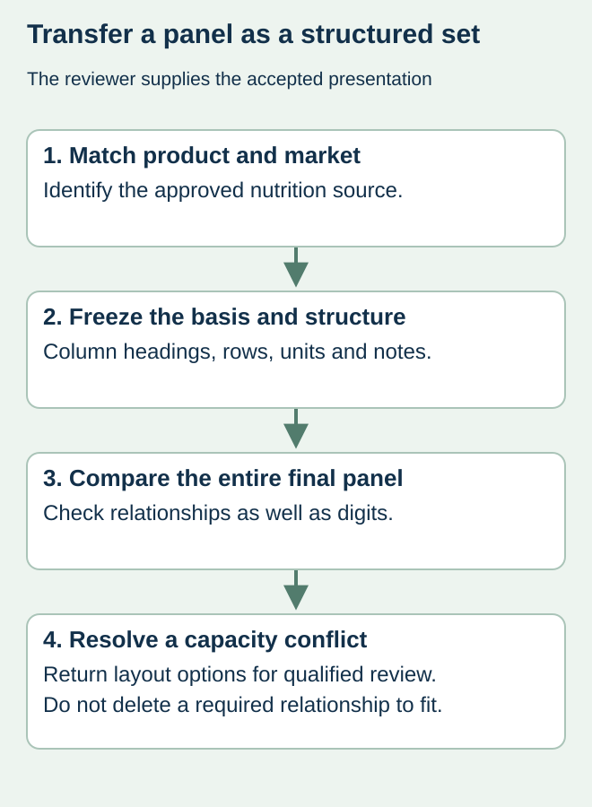

A brand sends nutrition values in a spreadsheet and a designer places them into a smaller panel template. The numbers arrive intact, but a column heading or serving basis changes. A value that was correct in its source can now describe the wrong amount of food on the label.
Transfer the approved nutrition panel as a defined set of headings, values, units and relationships. Keep the product version and basis attached to each column. Do not treat the numeric cells as independent artwork objects that can be rearranged to save space.


Establish which panel has been approved
FDA’s 21 CFR 101.9 notes that information is usually based on one serving and that some containers also display per-package information. The responsible nutrition and regulatory reviewer decides the applicable presentation for the actual product. A printer should not select a single- or dual-column arrangement merely because it fits a smaller label.
If a business has multiple market versions, keep their accepted panels separate. A source reporting values per 100 g or per 100 ml is not automatically the production source for a panel defined on another basis. Ask the qualified reviewer for the completed authorized output rather than instructing the designer to scale values informally.
Use a panel transfer map
| Panel element | Source definition | Output comparison |
|---|---|---|
| Identity | SKU, formula/version and target market | Correct accepted panel for this label |
| Basis | Serving, package or other expressly approved basis | Heading and corresponding column stay together |
| Values and units | Accepted amounts, percentages and symbols | No shifted row, unit substitution or hidden truncation |
| Presentation | Reviewer-approved relationships and format | Design preserves the accepted structure |
| Revision | Approved source and production export references | Proof does not combine two panel versions |
Keep both values and their meaning visible in the handoff. A bare column headed “amount” can lose context when another file is opened. Identify what the amount relates to and retain any reviewer-provided footnotes or presentation instructions. Unknown values remain unresolved; the designer should not fill them from a similar flavor.


Reconcile row and column changes together
For a hypothetical snack pouch, the designer might accidentally place per-container values beneath a per-serving heading when narrowing a dual-column design. Reading each number against its source is insufficient unless the reviewer also checks the heading, row and column relationship. Compare the entire final panel with the accepted reference at its intended size.
If the authorized panel does not fit, return the capacity problem to packaging and the responsible reviewer. Options may involve a different panel area or another permitted presentation, but their suitability must be established for the actual product. Do not remove a column or alter serving information as a cosmetic edit.
Close the nutrition and print decisions separately
The nutrition reviewer owns the values, basis and applicable presentation decision. The designer owns faithful placement, while the converter confirms its technical output scope. Record the accepted panel reference beside the final PDF and identify any unresolved role. A supplier’s proof approval request should not transfer nutrition calculation responsibility to purchasing.
Use the layout-capacity guide for fitting the approved content and the multilingual guide for mapping each accepted market version. A later formula or serving change should reopen the relevant source-to-output comparison before a repeat order.
Discuss the unresolved label requirement
Send the reviewer-approved panel output, exact product/market version, column and unit definitions, intended label dimensions and unresolved placement question. The printer does not calculate or certify nutrition values. Prepare a label specification inquiry. The contact page opens an email draft and lists email or WhatsApp for attachments. Supply, proof options, testing, pricing and timing require project confirmation.